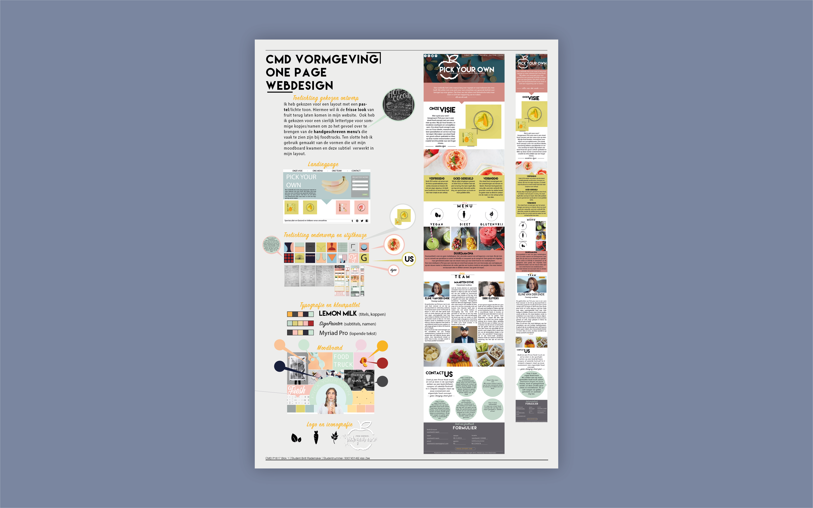
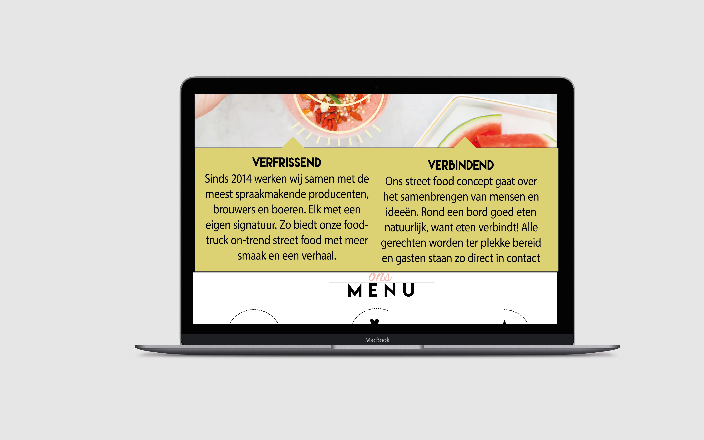

VORMGEVING
Illustrator
Vormgeving september 2016
De opdracht
Met dit vak kon ik goed laten zien hoe creatief ik was, voor zover de software mij niet beperkte. Ik mocht zelf weten hoe de website eruit kwam te zien waardoor ik kon laten zien wat ik mooi vind in het ontwerp van de website. Ik heb een website gemaakt voor widescreen en voor smallscreen.
Het eindresultaat
Met dit vak heb ik grote sprongen gemaakt wat betreft mijn kennis over verschillende Adobe programma’s, ik heb veel verschillende dingen geprobeerd en veel geoefend, hieruit blijkt dat ik leergierig en ijverig ben. Wat ik hiervan geleerd heb is het structureren van de content en om elementen vorm te geven. Wat ik na dit vak beter heb gedaan is het kijken naar lettergroottes. In illustrator zag de lettergrote er kleiner uit dan dat het op het beeld uitkwam, hier had ik niet goed rekening mee gehouden waardoor de lettergrootte te groot uitviel.


